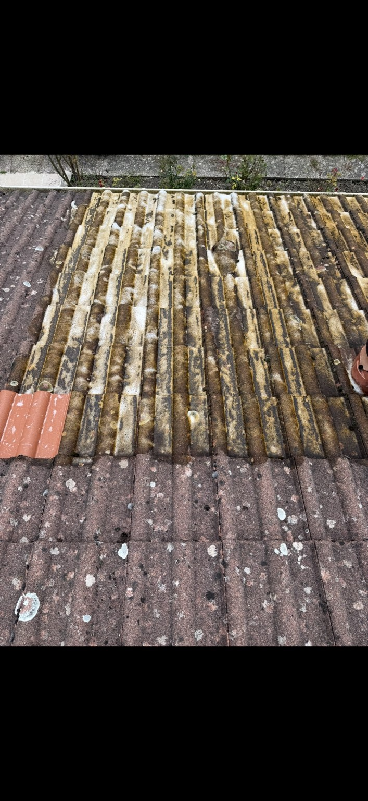
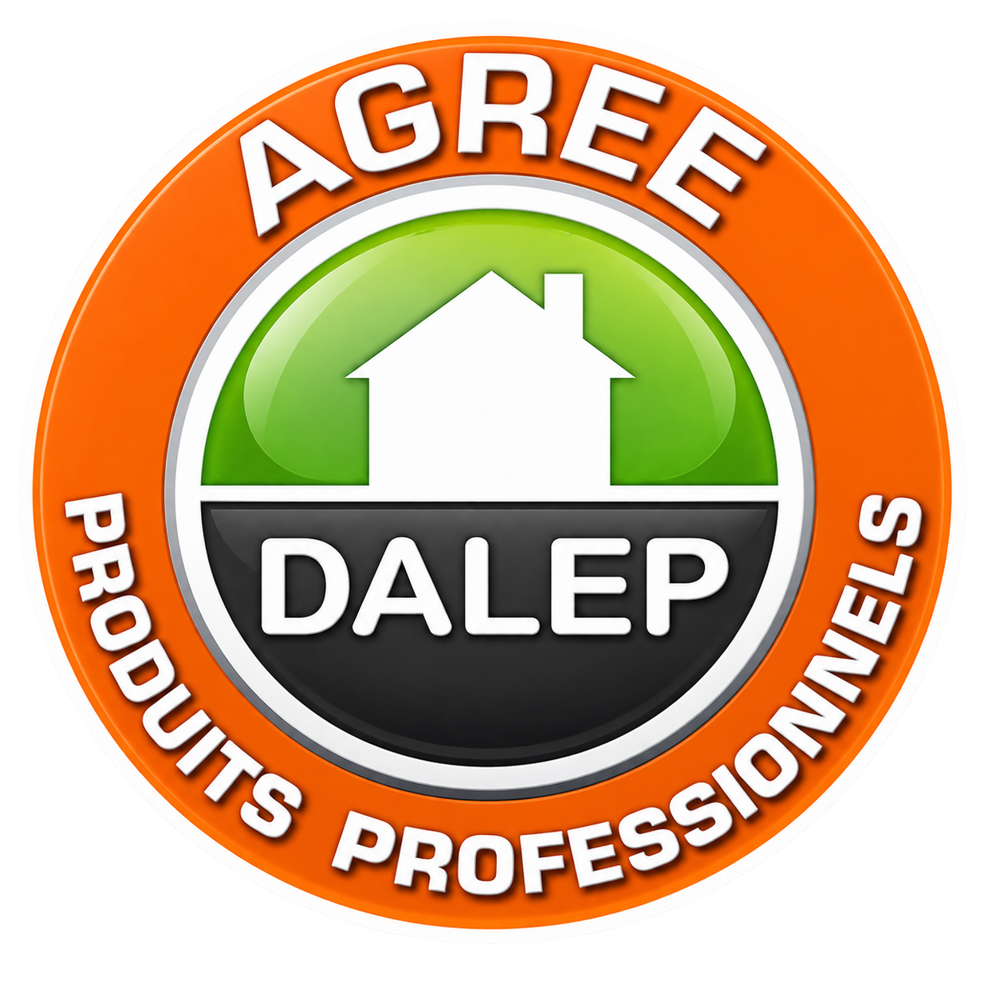
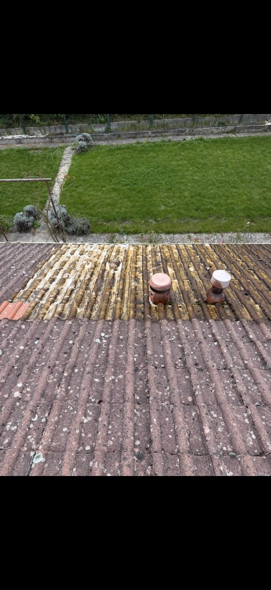

🌿
Élimination des mousses
Retrait des amas de mousses, lichens et végétaux présents sur la couverture.
J2B Couverture intervient pour éliminer mousses, lichens, traces et salissures sur les toitures à Toul, Nancy et dans le Grand Est. Pour le traitement anti-mousse, nous utilisons exclusivement des produits professionnels reconnus : DALEP 2100 ou Anti-M Guard® 2 en 1 de Guard Industrie, selon le support et les conditions du chantier.
L'objectif n'est pas seulement d'améliorer l'aspect de la toiture : un entretien adapté permet aussi de limiter l'accumulation de végétation et de vérifier l'état visible de la couverture.
Retrait des amas de mousses, lichens et végétaux présents sur la couverture.
Nettoyage avec une méthode adaptée au type de tuile, ardoise ou autre couverture.
Application exclusivement de DALEP 2100 ou Anti-M Guard® 2 en 1, selon le support et les conditions du chantier.
Une protection hydrofuge peut être proposée après contrôle du matériau et de son état.
Repérage des défauts visibles : tuiles cassées ou déplacées, faîtage, rives et raccords accessibles.
Évacuation des principaux résidus issus du nettoyage et remise en ordre de la zone de travail.

Les mousses et lichens se développent surtout sur les zones humides, ombragées ou peu ventilées. Lorsqu'ils s'accumulent, ils retiennent l'humidité et peuvent gêner l'écoulement de l'eau.
Pour le démoussage et le traitement de toiture, J2B Couverture n'utilise pas de produit premier prix ou de formule générique. Nous travaillons uniquement avec deux références professionnelles 2 en 1, choisies pour leur action fongicide et hydrofuge.

Traitement professionnel concentré 2 en 1. Action fongicide et hydrofuge, curative et préventive, sans rinçage. Il détruit les dépôts verts, algues, lichens et champignons tout en retardant leur réapparition.
Dilution : 1 L de produit + 7 L d'eau • 2 h sans pluie
Référence professionnelle Guard Industrie. Traitement fongicide et hydrofuge en une seule application, curatif et préventif, sans rinçage, compatible avec les toitures et de nombreux matériaux.
Dilution : 1 L de produit + 9 L d'eau • 2 h sans pluie
Parce qu'ils associent traitement contre les micro-organismes + effet hydrofuge, sans nécessiter de rinçage après application. Le produit est choisi selon le matériau, l'encrassement et les conditions du chantier.
Le protocole dépend de la toiture, de l'accès, de la pente et du niveau d'encrassement.
Observation de la couverture et vérification de la faisabilité de l'intervention.
Retrait des mousses et dépôts avec une méthode compatible avec le support.
Application d'un traitement adapté lorsque cela est prévu dans le devis.
Vérification visuelle, nettoyage de la zone et signalement des éventuels défauts constatés.
Envoyez-nous quelques photos par WhatsApp. Nous pourrons déjà apprécier le niveau d'encrassement avant de programmer une visite si nécessaire.
Retrouvez quelques exemples de toitures encrassées ainsi que différentes étapes de nettoyage, démoussage et traitement réalisées par J2B Couverture.

Avant nettoyageNous utilisons exclusivement deux références professionnelles : DALEP 2100 ou Anti-M Guard® 2 en 1 de Guard Industrie. Ces deux traitements associent une action fongicide et hydrofuge et s'utilisent sans rinçage.
Il n'existe pas de fréquence unique. L'exposition, les arbres à proximité, l'humidité, le matériau et l'âge de la toiture influencent fortement la vitesse d'encrassement.
Non. Une pression trop forte ou une méthode inadaptée peut endommager certains matériaux. Le nettoyage doit être choisi en fonction du support et de son état.
Non. L'hydrofuge est une option qui doit être cohérente avec le matériau et son état. Nous ne le proposons pas systématiquement.
Oui dans certains cas, mais une toiture très fragile doit d'abord être évaluée. Si les tuiles sont trop dégradées ou cassantes, une réparation ou une rénovation peut être préférable à un nettoyage agressif.
Oui, les défauts constatés peuvent être signalés et faire l'objet d'une réparation distincte selon les matériaux disponibles et l'état de la toiture.
J2B Couverture intervient depuis Toul vers Nancy et dans le Grand Est selon le chantier. Le devis tient compte de la surface, de la pente, de l'accès, du niveau d'encrassement et du traitement souhaité.
Indiquez-nous approximativement la surface et l'état de votre toiture.
📞 06 01 46 26 12Des photos d'ensemble permettent d'apprécier rapidement l'encrassement de la couverture.
💬 Envoyer des photos